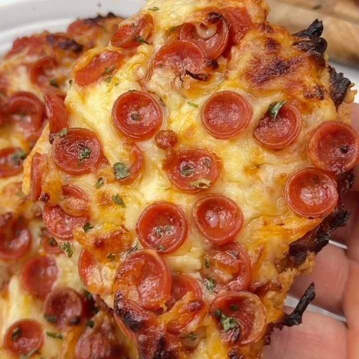

Pizza de Corteza de Pollo
Ingredientes:
Instrucciones:
- 1 lata de pollo (12.5 oz)
- 1/4 taza de queso parmesano
- 1 huevo
- Sal y pimienta
- Hierbas italianas
- 1/4 taza de salsa marinara
- 1/2 taza de queso mozzarella rallado
- 16 rebanadas de pepperoni mini
- Escurre y seca el pollo.
- Mezcla el pollo, el queso parmesano, el huevo, las hierbas y dale forma a una corteza delgada en una bandeja para hornear forrada con papel pergamino.
- Hornea a 450°F (230°C) durante 10 minutos.
- Sácalo, agrega tus ingredientes y vuelve a hornear hasta que el queso esté burbujeante (5-10 minutos).